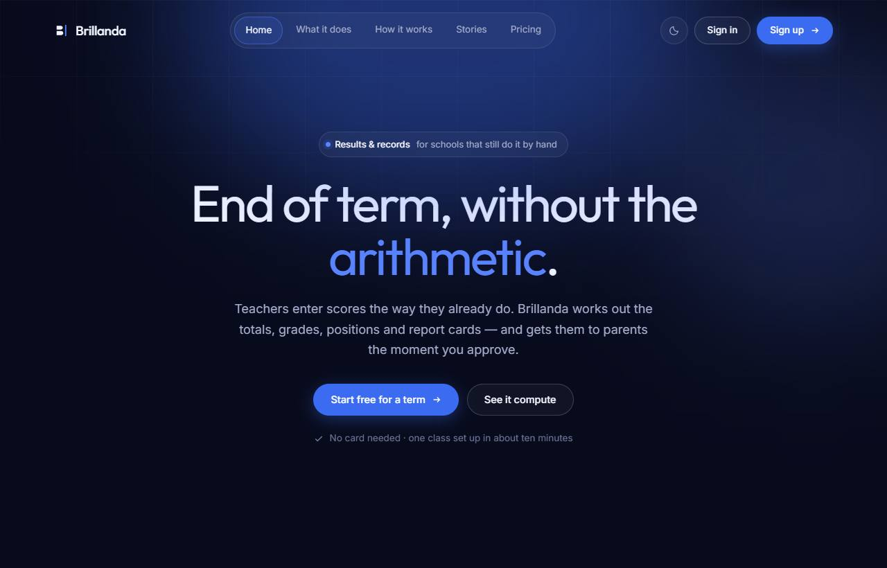
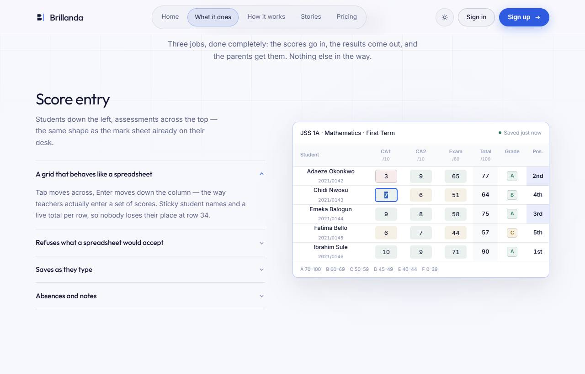
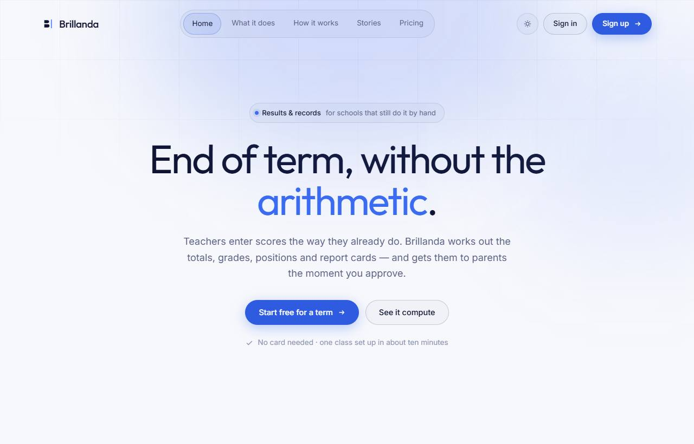
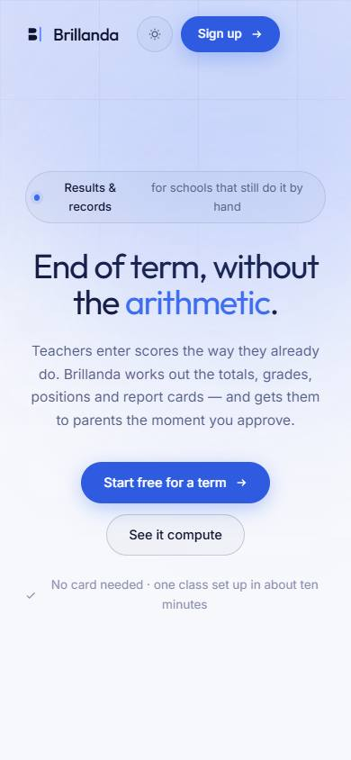

Brillanda landing page review
Four drafts of the marketing page, each opened in Chrome on a laptop (1280 px) and a phone (390 px), in light and dark, with the live mark sheet tried by hand. Scores are out of 5 against what matters for selling a results system to Nigerian schools.
Build A, Chalkboard & Marigold, and borrow B's FAQ section. A is the only draft that looks like it was made for schools: the working mark sheet is one scroll down, its warm accents stay on the marketing site while the neutral base matches the app, and it holds up on phones and in dark mode with almost no motion to slow older devices. B's FAQ answers the questions a cautious proprietor actually asks (fees, spreadsheets, bad internet, leaving), which A doesn't cover.
Scorecard
| What we judged | A · Chalkboard | B · Airy | C · Motion | D · Dark Tech |
|---|---|---|---|---|
| Fits schools and proprietors | 5 of 5 | 4 of 5 | 2 of 5 | 2 of 5 |
| Fast on slow connections | 938 KB* | 490 KB* | 708 KB* + 2 s preloader | 151 KB |
| Smooth on low-end phones | 5 of 5 | 4 of 5 | 2 of 5 | 3 of 5 |
| Readable and accessible | 4 of 5 | 3 of 5 | 3 of 5 | 3 of 5 |
| Claims match what we're building | 4 of 5 | 3 of 5 | 3 of 5 | 2 of 5 |
| Look carries into the app | 5 of 5 | 4 of 5 | 2 of 5 | 3 of 5 |
| Total out of 30 | 27 | 22 | 14 | 18 |
A · Chalkboard & Marigold 27 / 30
Warm and school-native. A split hero with illustrated classroom scenes, then the working mark sheet on a chalkboard band.


Works well
- The product is on screen early, with the grid one scroll down
- Chalkboard green and marigold feel like a school without being childish
- Neutral base is the same family as the app's graphite
- Phone and dark mode both hold up; motion is minimal
Watch out for
- Two web fonts plus four photos make it the heaviest page until the photos are compressed
- A pill label above the headline and middle dots in the trust strip read as template habits
- The testimonial portrait is still an illustration until there is a real quote from a real school
Claims to fix
- "Refused at the cell": the demo quietly drops a digit instead of showing an error
- "Flags on anything that looks wrong" isn't in the BRD
- History limits per plan are business decisions to confirm
B · Airy Minimal 22 / 30
Near-monochrome and expensive-feeling. A full-bleed dark classroom hero, then zigzag feature blocks, pricing cards and an FAQ.


Works well
- Calm and premium; closest to the app's current graphite look
- The FAQ answers a proprietor's real objections
- Pricing cards are easy to compare
Watch out for
- The hero now works with a real photo, but it only shows students, not the product
- On phones, Sign in and Sign up wrap onto two lines and the menu button looks empty
- Atmosphere first: the product only appears on the second screen
Claims to fix
- A column-matching dropdown for spreadsheet import isn't planned
- Automatic flags on odd results aren't in scope
- "Multiple campuses" in the Standard plan isn't in scope
C · Cinematic Motion 14 / 30
Editorial and motion-led. A loading counter, line-by-line reveals, parallax, a custom cursor and a section that scrolls sideways.


Works well
- Striking, well-crafted motion
- Everything switches off properly for reduced-motion users
Watch out for
- A 2-second loading screen on every visit, even when the page is already loaded
- The custom cursor runs an animation loop the whole time
- 8,200 px tall; the grid is cut off on phones
- This motion language doesn't transfer to a data-entry app
Claims to fix
- Automatic flags and multiple campuses aren't in scope
- "41 s for a class of report cards" is unproven
D · Dark Tech 18 / 30
Midnight navy with blue glows, a pill nav, accordion features and tilted UI cards, with a fully designed light mode.








Works well
- The lightest page of the four
- Accordions pack a lot of detail into little space
- The best-built light/dark switch
Watch out for
- Reads as a developer-tools startup, not a school product
- Blue replaces the brand graphite, and one headline word is highlighted
- The top badge breaks awkwardly on phones; big blurred glows strain low-end phones
Claims to fix
- Absent students "excluded from the weighting": we count them as 0 (DECISIONS D-3)
- Notes on individual cells aren't in scope
- Automatic flags and multiple campuses aren't in scope
How this was checked
- Opened in Chrome at 1280 px and 390 px, in light and dark, and with reduced motion on. No console errors, no sideways scrolling on any page.
- Typed into each live mark sheet: totals, grades and positions update, and Enter moves down the column in all four. In all four, a score over the maximum loses its last digit silently instead of showing an error. The real build uses the app's own score rules.
- The theme switch survives a reload in all four. Page weight includes fonts.
- One bug was fixed so all four could be judged fairly: in A, B and C the mark sheet shared the logo's
.markclass and rendered as a squashed flex row. - Photos in A, B and C are free stock photos from Pexels and Unsplash (credits in
photos/CREDITS.md). *Page weights include them as uncompressed JPEGs; the real build serves compressed, right-sized versions. D has no photo slots. Testimonial portraits stay illustrated, because a real person’s face next to a sample quote would imply they said it. - Testimonials, school names, stats and prices in every draft are sample content. "Sign up" has nowhere to go yet; the chosen design gets a request-a-trial form.